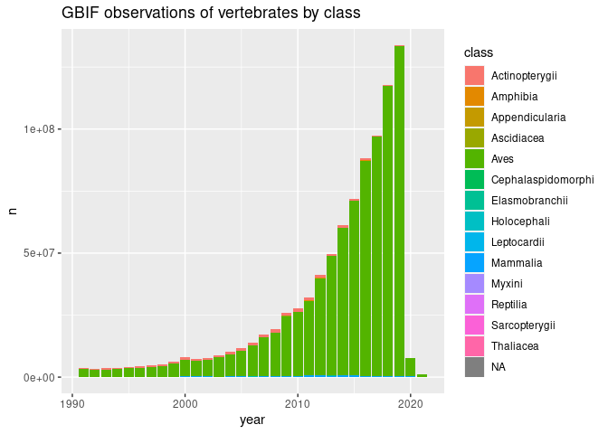

The goal of gbifdb is to provide a relational database interface to a parquet based serializations of gbif data. Instead of requiring custom functions for filtering and selecting data from the central GBIF server (as in rgbif), gbifdb users can take advantage of the full array of dplyr and tidyr functions which can be automatically translated to SQL by dbplyr. Users already familiar with SQL can construct SQL queries directly with DBI instead. gbifdb sends these queries to duckdb, a high-performance, columnar-oriented database engine which runs entirely inside the client, (unlike server-client databases such as MySQL or Postgres, no additional setup is needed outside of installing gbifdb.) duckdb is able to execute these SQL queries directly on-disk against the Parquet data files, side-stepping limitations of available RAM or the need to import the data. It’s highly optimized implementation can be faster even than in-memory operations in dplyr. duckdb supports the full set of SQL instructions, including windowed operations like group_by+summarise as well as table joins.
gbifdb has two mechanisms for providing database connections: one which the Parquet snapshot of GBIF must first be downloaded locally, and a second where the GBIF parquet snapshot can be accessed directly from an Amazon Public Data Registry S3 bucket without downloading a copy. The latter approach will be faster for one-off operations and is also suitable when using a cloud-based computing provider in the same region.
Installation
NOTE: gbifdb currently requires the dev version of duckdb, which you can install using:
install.packages("https://github.com/duckdb/duckdb/releases/download/master-builds/duckdb_r_src.tar.gz", repos = NULL)And the development version from GitHub with:
# install.packages("devtools")
devtools::install_github("cboettig/gbifdb")gbifdb has few dependencies: only duckdb and DBI are required.
Getting Started
Remote data access
To begin working with GBIF data directly without downloading the data first, simply establish a remote connection using gbif_remote().
gbif <- gbif_remote()We can now perform most dplyr operations:
gbif %>%
filter(phylum == "Chordata", year > 1990) %>%
count(class, year)
#> FileSystemDataset (query)
#> class: string
#> year: int32
#> n: int32
#>
#> * Grouped by class
#> See $.data for the source Arrow objectBy default, this relies on an arrow connection, which currently lacks support for some more complex windowed operations in dplyr. A user can specify the option to_duckdb = TRUE in gbif_remote() (or simply pass the connection to arrow::to_duckdb()) to create a duckdb connection. This is slightly slower at this time. Keep in mind that as with any database connection, to use non-dplyr functions the user will generally need to call dplyr::collect(), which pulls the data into working memory.
Be sure to subset the data appropriately first (e.g. with filter, summarise, etc), as attempting to collect() a large table will probably exceed available RAM and crash your R session!
When using a gbif_remote() connection, all I/O operations will be conducted over the network storage instead of your local disk, without downloading the full dataset first. These operations will be considerably slower than they would be if you download the entire dataset first (see below, unless you are on an AWS cloud instance in the same region as the remote host), but this does avoid the download step all-together, which may be necessary if you do not have 100+ GB free storage space or the time to download the whole dataset first (e.g. for one-off queries).
Local data
For extended analysis of GBIF, users may prefer to download the entire GBIF parquet data first. This requires over 100 GB free disk space, and will be a time-consuming process the first time. However, once downloaded, future queries will run much much faster, particularly if you are network-limited. Users can download the current release of GBIF to local storage like so:
By default, this will download to the dir given by gbif_dir().
An alternative directory can be set as an argument, or by setting the path in the environmental variable, GBIF_HOME.
Once you have downloaded the parquet-formatted GBIF data, simply point gbif_conn() at the directory containing your parquet files to initialize a connection. (By default, gbif_conn() will look for data in the configurable directory given by gbif_dir()).
conn <- gbif_conn()The resulting connection can be used with dplyr::tbl() to access the full gbif data:
gbif <- tbl(conn, "gbif")
gbif
#> # Source: table<gbif> [?? x 50]
#> # Database: duckdb_connection
#> gbifid datasetkey occurrenceid kingdom phylum class order family genus
#> <dbl> <chr> <chr> <chr> <chr> <chr> <chr> <chr> <chr>
#> 1 1851456555 b234abf6-4… 03871B11FFA43… Animal… Echin… Holo… Dend… Cucum… Acti…
#> 2 1851456618 b234abf6-4… 03871B11FFAA3… Animal… Echin… Holo… Dend… Scler… Clad…
#> 3 1851456554 b234abf6-4… 03871B11FFA53… Animal… Echin… Holo… Dend… Cucum… Acti…
#> 4 1851456620 b234abf6-4… 03871B11FFA03… Animal… Echin… Holo… Dend… Phyll… Tria…
#> 5 1851456556 b234abf6-4… 03871B11FFA83… Animal… Echin… Holo… Dend… Scler… Glob…
#> 6 1851456619 b234abf6-4… 03871B11FFA33… Animal… Echin… Holo… Dend… Phyll… Mass…
#> 7 1851456623 b234abf6-4… 03871B11FFA03… Animal… Echin… Holo… Dend… Phyll… Tria…
#> 8 1851456714 b234abf6-4… 03871B11FFAC3… Animal… Echin… Holo… Dend… Phyll… Mass…
#> 9 1851456553 b234abf6-4… 03871B11FFAA3… Animal… Echin… Holo… Dend… Scler… Clad…
#> 10 1851456622 b234abf6-4… 03871B11FFA53… Animal… Echin… Holo… Dend… Cucum… Acti…
#> # … with more rows, and 41 more variables: species <chr>,
#> # infraspecificepithet <chr>, taxonrank <chr>, scientificname <chr>,
#> # verbatimscientificname <chr>, verbatimscientificnameauthorship <chr>,
#> # countrycode <chr>, locality <chr>, stateprovince <chr>,
#> # occurrencestatus <chr>, individualcount <int>, publishingorgkey <chr>,
#> # decimallatitude <dbl>, decimallongitude <dbl>,
#> # coordinateuncertaintyinmeters <dbl>, coordinateprecision <dbl>, …
colnames(gbif)
#> [1] "gbifid" "datasetkey"
#> [3] "occurrenceid" "kingdom"
#> [5] "phylum" "class"
#> [7] "order" "family"
#> [9] "genus" "species"
#> [11] "infraspecificepithet" "taxonrank"
#> [13] "scientificname" "verbatimscientificname"
#> [15] "verbatimscientificnameauthorship" "countrycode"
#> [17] "locality" "stateprovince"
#> [19] "occurrencestatus" "individualcount"
#> [21] "publishingorgkey" "decimallatitude"
#> [23] "decimallongitude" "coordinateuncertaintyinmeters"
#> [25] "coordinateprecision" "elevation"
#> [27] "elevationaccuracy" "depth"
#> [29] "depthaccuracy" "eventdate"
#> [31] "day" "month"
#> [33] "year" "taxonkey"
#> [35] "specieskey" "basisofrecord"
#> [37] "institutioncode" "collectioncode"
#> [39] "catalognumber" "recordnumber"
#> [41] "identifiedby" "dateidentified"
#> [43] "license" "rightsholder"
#> [45] "recordedby" "typestatus"
#> [47] "establishmentmeans" "lastinterpreted"
#> [49] "mediatype" "issue"Now, we can use dplyr to perform standard queries:
growth <- gbif %>%
filter(phylum == "Chordata", year > 1990) %>%
count(class, year) %>% arrange(year)
growth
#> # Source: lazy query [?? x 3]
#> # Database: duckdb_connection
#> # Groups: class
#> # Ordered by: year
#> class year n
#> <chr> <int> <dbl>
#> 1 Aves 1991 3183184
#> 2 Mammalia 1991 100931
#> 3 Actinopterygii 1991 363791
#> 4 Amphibia 1991 18443
#> 5 Reptilia 1991 29806
#> 6 Elasmobranchii 1991 17521
#> 7 Holocephali 1991 1048
#> 8 Cephalaspidomorphi 1991 1152
#> 9 Thaliacea 1991 669
#> 10 Sarcopterygii 1991 13
#> # … with more rowsRecall that when database connections in dplyr, the data remains in the database (i.e. on disk, not in working RAM).
This is fine for any further operations using dplyr/tidyr functions which can be translated into SQL.
Using such functions we can usually reduce our resulting table to something much smaller, which can then be pulled into memory in R for further analysis using collect():
library(ggplot2)
library(forcats)
# GBIF: the global bird information facility?
growth %>%
collect() %>%
mutate(class = fct_lump_n(class, 6)) %>%
ggplot(aes(year, n, fill=class)) + geom_col() +
ggtitle("GBIF observations by class")